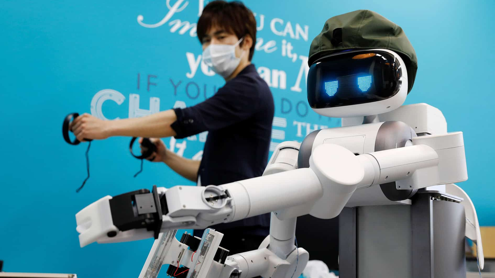
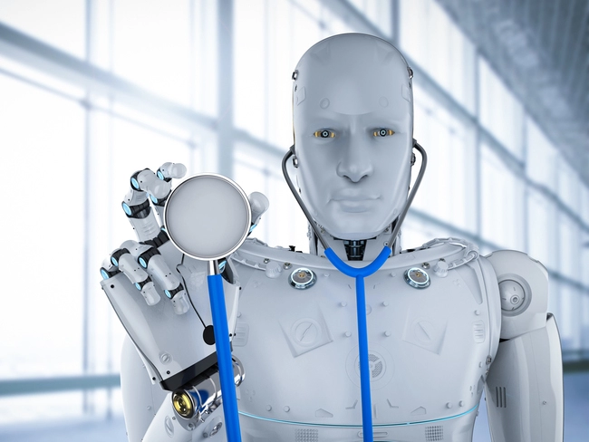

Robotics is an interdisciplinary research area at the interface of computer science and engineering. Robotics involves design, construction, operation, and use of robots. The goal of robotics is to design intelligent machines that can help and assist humans. Robotics draws on the fields of information engineering, computer engineering, mechanical engineering, electronic engineering, Artificial Intelligence, and others.

Robotics develops machines that can substitute for humans and replicate human actions. Robots can be used in many situations and for many purposes, but today many are used in dangerous environments (including inspection of radioactive materials, bomb detection and deactivation), manufacturing processes, or where humans cannot survive (e.g. in space, underwater, in high heat, and clean up and containment of hazardous materials and radiation). Robots can take on any form but some are made to resemble humans in appearance. This is said to help in the acceptance of a robot in certain replicative behaviors usually performed by people. Such robots attempt to replicate walking, lifting, speech, cognition, or any other human activity.
Many of today's robots are inspired by nature, contributing to the field of bio-inspired robotics.
The concept of creating robots that can operate autonomously dates back to classical times, but research into the functionality and potential uses of robots did not grow substantially until the 20th century. Throughout history, it has been frequently assumed by various scholars, inventors, engineers, and technicians that robots will one day be able to mimic human behavior and manage tasks in a human-like fashion.

Today, robotics is a rapidly growing field, as technological advances continue; researching, designing, and building new robots serve various practical purposes, whether domestically, commercially, or militarily.
Many robots are built to do jobs that are hazardous to people, such as defusing bombs, finding survivors in unstable ruins, and exploring mines and shipwrecks. Robotics is also used in STEM (science, technology, engineering, and mathematics) as a teaching aid.
Robotics is a branch of engineering that involves the conception, design, manufacture, and operation of robots. This field overlaps with computer engineering, computer science (especially artificial intelligence), electronics, mechatronics, mechanical, nanotechnology and bioengineering.
For Further Information
Please Visit
the International Federation of Robotics